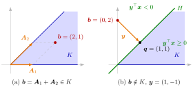

Let A1,…,An be the columns of A. Statement (a) says that b lies in the finitely generated convex coneK={Ax:x≥0}=Cone({A1,…,An}). Statement (b) says that the hyperplane H={x:y⊤x=0} through 0 has every column, hence all of K, on the side y⊤x≥0, and b strictly on the other side. Either b is in the cone or it can be cut off from it.

The figure draws Example 1 below. The columns A1=(1,0) and A2=(1,1) generate the cone K (blue). In (a), b=(2,1)=A1+A2 lies in K, and the dashed parallelogram shows the nonnegative solution x=(1,1) of Ax=b. In (b), b=(0,2) lies outside K. Its nearest point in K is q=(1,1), and y=q−b=(1,−1) is normal to the line H:x1=x2, which has K on the side y⊤x≥0 and b on the side y⊤x<0.
Both cannot hold, since b⊤y=x⊤A⊤y≥0 when x≥0. That one of them holds uses two facts about convex sets: a finitely generated convex cone such as K is closed, so a point b∈/K has a nearest pointq∈K, and y=q−b then works (Example 1 below). Without closedness the separation can fail (Example 3 below), and the strict inequality b⊤y<0 cannot be weakened (Example 2 below).
A vector y as in (b) is a certificate: checking A⊤y≥0 and b⊤y<0 proves that the linear system has no nonnegative solution, without searching through all candidates. In the language of the polar cone, (b) says that −y∈K∘ and (−y)⊤b>0.
Other books state (b) as A⊤y≤0,b⊤y>0; replacing y by −y turns one into the other. The variant of Farkas' lemma stated above adds a slack variable per inequality and drives the long proof of strong duality.
Exactly one of {Ax=b,x≥0} and {A⊤y≥0,b⊤y<0} has a solution.
Geometric form: b∈Cone({A1,…,An}), or there is a hyperplane through 0 with the cone on one side and b strictly on the other.
Proof of "at least one": if b∈/K, the nearest point q∈K, which exists because K is closed and convex, satisfies (b−q)⊤q=0 and (b−q)⊤v≤0 for all v∈K, so y=q−b has A⊤y≥0 and b⊤y=−∥y∥2<0.
Variant: Ax≤b has a solution x≥0 if and only if y⊤b≥0 for all y≥0 with A⊤y≥0; proof by applying Farkas' lemma to [AIm]xˉ=b, where xˉ=(x,s) adds one slack variable si≥0 per inequality.
1. Inside and outside the cone. Let A have columns A1=(1,0) and A2=(1,1), so K={(u,v):0≤v≤u}. For b=(2,1),x=(1,1) solves Ax=b with x≥0: statement (a). For b=(0,2) the only solution of Ax=b is x=(−2,2), which is not nonnegative. The nearest point of K is the projection onto the ray through (1,1),q=(1,1), and y=q−b=(1,−1) gives A⊤y=(1,0)≥0 and b⊤y=−2=−∥y∥2: statement (b). The line x1=x2 through 0 separates K from b.
2. The strict inequality matters. With the same A and b=(3,3)=3A2, statement (a) holds with x=(0,3), so (b) fails: every y with A⊤y≥0 has b⊤y=3(y1+y2)≥0. The vector y=(1,−1) reaches b⊤y=0, because b lies on the boundary of K. With "≤0" in place of "<0", the second system would always be solvable by y=0, and "exactly one" would be false.
3. A cone that is not closed. The set K′={(u,v):u>0}∪{0} is a convex cone, but not closed and not finitely generated. The point b=(0,1) is not in K′. A vector y with y⊤v≥0 for all v∈K′ must satisfy y1u+y2v≥0 for every u>0 and every v, which forces y2=0 and y1≥0. Then b⊤y=0, never negative. The proof breaks down because K′ has no point nearest to b; for the cone generated by the columns of a matrix this cannot happen, because such a cone is closed.
4. The variant as an infeasibility certificate. The system x1−x2≤−1,−x1+x2≤−1,x1,x2≥0 has no solution. The variant of Farkas' lemma confirms this with y=(1,1)≥0:A⊤y=(0,0)≥0 but y⊤b=−2<0. Adding the two inequalities with weights 1 and 1 gives 0≤−2, which is exactly what this y encodes.
Aliases: Farkas lemma, Farkas's lemma, theorem of the alternative, certificate of infeasibility
Keywords: \boldsymbol{A}\boldsymbol{x}=\boldsymbol{b},\ \boldsymbol{x}\geq\boldsymbol{0}, \boldsymbol{A}^{\top}\boldsymbol{y}\geq\boldsymbol{0},\ \boldsymbol{b}^{\top}\boldsymbol{y}<0, \boldsymbol{b}\in\operatorname{Cone}({\boldsymbol{A}_1,\dots,\boldsymbol{A}_n}), exactly one of two systems has a solution, variant for inequalities
Symbols: element of, real numbers, union
Last updated: 5 November 2026 12:47
Farkas' LemmaFinitely Generated Convex ConeNearest Point of a Closed Convex SetSeparation of a Point and a Closed Convex SetSystem of Linear EquationsStrong DualityPolar ConeSeparating HyperplaneNormal Cone of a Polyhedral SetPossible Outcomes of a Primal–Dual PairOrthogonal Projection